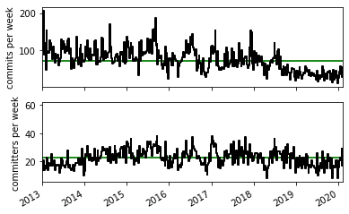
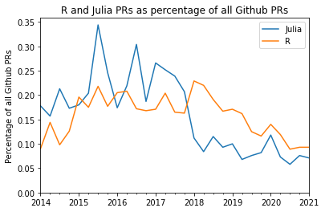
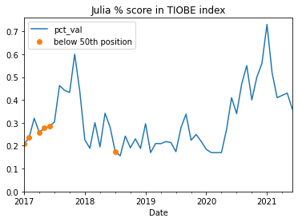
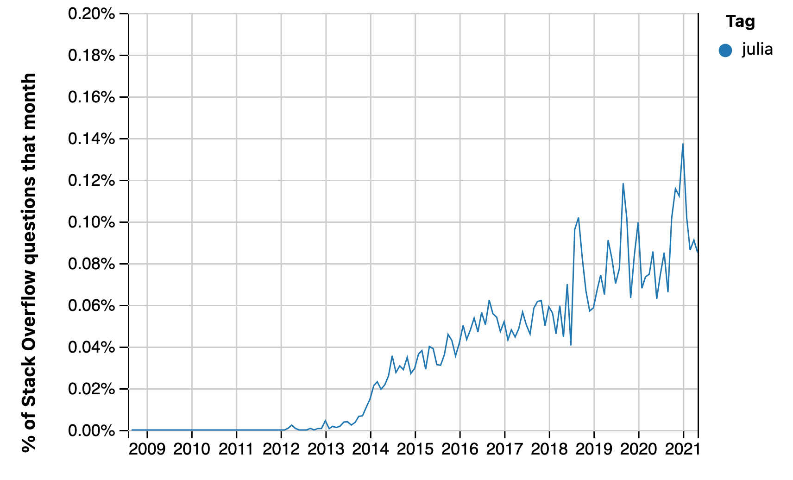
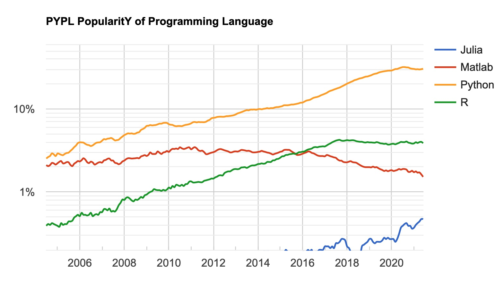

How is Julia doing? June 2021
teaching
open source
programming
The Julia programming language probably isn’t growing fast enough
Keywords
Julia
This is an update from my previous two posts on uptake and activity for the Julia programming language.
As for the previous posts, the source for this document is a Jupyter Notebook: hows-julia-2021.ipynb notebook. Get the notebook from Github repository of this blog.
Summary
As for the previous posts, I collected time-series data from the Julia language repository commits, proportion of Github PRs, and two language ranking sites.
There are signs of a moderate uptick of web searches for Julia in mid 2020 / 2021, but a suggestion that activity may have dropped off in the last few months. Julia main repository activity has stayed pretty flat, as have the Julia Github PR percentages. It still does not look as if Julia is growing fast enough to be a significant medium-term competitor to Python in data science.
The subheading below match those from the previous posts. See those posts for more detail on methods.
Health of the Julia repository
This is an update on the health of the code repository for the Julia language and its standard libraries.
As for the previous posts, I analyzed commits of the Julia Language repository using some code by Thomas Caswell.
There’s a copy of the commit data in julia_commits_current.csv in downloads/julia_commits_curent.csv.
The previous post had a plot of contributors ordered by their number of commits against the cumulative number of commits, as an index of breadth of contribution. See that post for code to replicate that plot with the data here. It has not changed much since the 2020 analysis.
The next figure is a plot of the number of commits and number of committers per week:
Julia’s development continues at a steady rate of around 40 commits per week since the first release in August 2018.
Percentage of all Github pull requests
This is an update of the proportion of Github Pull Requests that are in the Julia language, and others, from data scraped by hand from the Githut 2.0 site. The latest version of these data is this link

Julia’s numbers have been steady at about 0.1% since 2019.
For comparison, here are the values for Python, R and Julia for the last two years:
| Python | R | Julia | |
|---|---|---|---|
| 2021-02-01 | 16.628 | 0.093 | 0.071 |
| 2020-11-01 | 16.488 | 0.093 | 0.076 |
| 2020-08-01 | 15.873 | 0.089 | 0.058 |
| 2020-05-01 | 16.108 | 0.119 | 0.073 |
TIOBE language index
The values here come from archive.org copies of https://www.tiobe.com/tiobe-index.
The data file with the index values is downloads/julia_tiobe_current.csv.

As a reminder, the TIOBE index derives from counts of search index hits for particular languages.
The graph shows a moderate uptick in the Julia percent score from mid 2020.The latest percentages are down around 0.4 from the peak of 0.7 at the end of 2020, and there’s some suggestion from the month-to-month variation that the peak, and the subsequent moderate drop, are a little outside the noise. It seems reasonble to conclude that there has been a moderate increase in web searches related to Julia.
Redmonk Programming Language Rankings / Stack Overflow
It is difficult to know where Julia is in the Redmonk ratings. The rankings only list the top 20 languages, and Julia is not in the top 20. The June 2020 rankings note Julia at +0 change, but it’s not clear where it was previously. The January 2021 ratings don’t mention Julia in the text.
Some data for the Redmonk rankings come from Stack Overflow data. Here is an update of the percentage of Stack Overflow questions on Julia:

This graphic is a screen shot from the PopularitY of Programming Languages website:

Notice the logarithmic scale. This plot seems to reflect the uptick we saw in the TIOBE index. The PYPL site notes that “The raw data comes from Google Trends.”, so PYPL is probably looking at the same data as TIOBE (above).